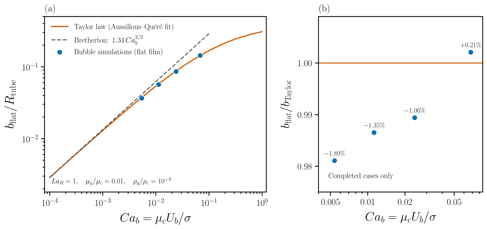

docs/Newtonian-Validation/README.md
Newtonian bubbles in circular tubes
A long gas bubble translating through a wetting liquid leaves an annular film between its interface and the tube wall. Viscous stress draws liquid into this film, while surface tension connects the nearly cylindrical film to the curved menisci. This balance gives the classical Bretherton law at small capillary number and a thicker, geometrically confined film as the bubble speed increases.
This document assesses the present axisymmetric simulations against those two limits. The four available calculations agree within 2% with a commonly used finite-capillary-number correlation when the flat film is measured. This is promising, but preliminary: the four points share one maximum refinement level and therefore do not establish mesh independence, the limiting Bretherton coefficient, or the accuracy of other observables such as the pressure drop and rear-meniscus shape.
Physical quantities and reference solutions
Let \(R_t\) be the tube radius, \(R_v\) the volume-equivalent bubble radius, \(U_b\) the bubble speed, and \(\overline U\) the imposed mean liquid speed. The film thickness and the two capillary numbers are
\[ H=\frac{b_{\mathrm{flat}}}{R_t}, \qquad Ca_b=\frac{\mu_c U_b}{\sigma}, \qquad Ca_{\mathrm{in}}=\frac{\mu_c\overline U}{\sigma}, \]
where \(\mu_c\) is the continuous-phase viscosity and \(\sigma\) is the surface tension. The bubble speed is measured from the motion of the front tip. Consequently, \(Ca_b\) is the appropriate horizontal coordinate for the reference curves; \(Ca_{\mathrm{in}}\) remains an independently reported input.
For a long bubble of negligible viscosity moving at small Reynolds number, Bretherton matched the viscous dynamic meniscus to the capillary outer shape and obtained
\[ H_B\simeq0.643(3Ca_b)^{2/3}\simeq1.337Ca_b^{2/3}. \]
The rounded coefficient 1.34 is conventional. A convincing limiting-case test must show that \(H/Ca_b^{2/3}\) approaches 1.337 as \(Ca_b\) decreases. Agreement at moderate \(Ca_b\) with a line of slope \(2/3\) is insufficient because the thin-film assumption itself is then weakening. Bretherton also predicts the relative speed excess
\[ W=\frac{U_b-\overline U}{U_b} \simeq 1.29(3Ca_b)^{2/3}. \]
For a stationary uniform film, volume conservation gives the related check
\[ \frac{\overline U}{U_b}=(1-H)^2, \qquad W=1-(1-H)^2. \]
The liquid flux in the simulated film should be measured before treating this identity as exact. A finite gas viscosity, interaction between the menisci, or motion within the deposited film can alter the relation.
Pressure coefficients require an explicit convention. With positive excess pressure defined from the liquid behind the bubble to the liquid ahead of it, Bretherton’s summed front-and-rear dynamic contribution is
\[ \Delta p_{\mathrm{bubble}} \simeq 4.52\frac{\sigma}{R_t}(3Ca_b)^{2/3}. \]
The coefficient 3.58, also quoted in Bretherton’s abstract, is the dynamic correction associated with the leading meniscus. It should not be substituted for 4.52 when comparing the pressure difference across a complete long bubble. Any numerical comparison must sample pressures outside both dynamic menisci and retain the same sign and radius convention.
At finite capillary number, Aussillous and Quéré represented Taylor’s circular- tube data by
\[ H_T=\frac{1.34Ca_b^{2/3}}{1+3.35Ca_b^{2/3}}. \]
This expression is an empirical rational fit introduced by Aussillous and Quéré; it is not an equation proposed by Taylor. It approaches the Bretherton law as \(Ca_b\to0\) and limits the film thickness as confinement becomes important. Taylor measured the fraction of liquid left on the wall by a gas finger advancing through a liquid-filled circular tube. Those measurements are useful independent data after conversion through \(m=1-(1-H)^2\). Aussillous and Quéré’s high-speed experiments, including their figure 3, instead concern a finite liquid column displaced by air. Their inertial thresholds \(Ca^*\) and \(Ca^{**}\) are therefore not universal transition values for a finite gas bubble and are not reproduction targets here.
Numerical model and provenance
The calculation solves the axisymmetric, incompressible two-phase Navier–Stokes equations. A volume-of-fluid field tracks the gas–liquid interface, surface tension supplies the capillary stress, and an embedded boundary represents the circular tube wall. The wall is no-slip and fully wetted by the continuous phase. A Poiseuille profile drives the liquid at the inlet, while the bubble translates without contacting the wall.
Surface tension, continuous-phase viscosity, and \(R_v\) define the repeating scales. The reported calculations use
\[ R_t/R_v=0.7,\qquad \mu_g/\mu_c=0.01,\qquad \rho_g/\rho_c=0.001, \]
with the volume-radius Laplace number
\[ La_v=\frac{\rho_c\sigma R_v}{\mu_c^2}=1. \]
For tube-based comparisons,
\[ La_t=0.7La_v,\qquad Re_t=La_tCa_b,\qquad We_t=La_tCa_b^2. \]
Thus inertia becomes a quantity to measure as the
sweep approaches \(Ca_b=1\); it cannot be
removed by calling the liquid Newtonian. The simulations
and numerical checks use the project-pinned Basilisk
release v2026-08-30. This version
identifier, the solver source, all dimensionless inputs,
compiler options, and analysis definitions form the
minimum provenance needed for an independent
reproduction.
Preliminary film-thickness comparison

The numerical values used in the figure are available
in baseline-film.csv.
| \(Ca_{\mathrm{in}}\) | \(Ca_b\) | \(H\) | \(H_T\) | \(100(H/H_T-1)\) |
|---|---|---|---|---|
| 0.005 | 0.00538868 | 0.0366354 | 0.0373420 | -1.892% |
| 0.010 | 0.0112414 | 0.0567910 | 0.0575664 | -1.347% |
| 0.020 | 0.0239374 | 0.0861486 | 0.0870712 | -1.060% |
| 0.050 | 0.0680939 | 0.143663 | 0.143363 | +0.209% |
The flat-film estimator removes 30% of the bubble extent at each end, takes the median interface radius over the remaining central region, and averages the result over the final quarter of the usable snapshots. A linear fit to the front-tip position over the same temporal window gives \(U_b\). The estimator is designed to exclude both dynamic menisci, but the presence of a spatial plateau and its sensitivity to the trimming and averaging windows have not yet been quantified.
The minimum film near the rear meniscus is a different observable. Relative to \(H_T\), the four minimum values differ by approximately -32.3%, -25.9%, -23.7%, and -18.4%. These deviations do not contradict the flat-film comparison: capillary waves at the rear meniscus can produce a local minimum below the uniform film. A stopping criterion based on a steady minimum also does not prove that the flat film, pressure drop, bubble length, and complete travelling shape are stationary.
All four results currently use maximum level 10 in a domain of length \(16R_v\), for which the smallest possible cell is \(\Delta_{\min}=0.015625R_v\). The measured flat films correspond to only 1.64, 2.54, 3.86, and 6.44 such cells. These figures are geometric upper bounds on resolution: adaptive refinement must be inspected to establish the actual cells present across each film. There is currently no refinement sequence for any of the four points. The reported agreement must therefore remain a comparison at one numerical resolution rather than an accuracy claim.
Grid-sensitivity study
The grid study keeps the four existing input values \(Ca_{\mathrm{in}}=0.005, 0.01, 0.02, 0.05\) and changes only spatial resolution in its first stage. Each input is being considered at maximum levels 9, 10, 11, and 12; level 10 is the existing result and level 12 is a conditional follow-up. Selected points may then require finer stages if the sequence has not entered an asymptotic range, with the lowest-capillary-number case the most likely candidate because its film is thinnest. This is the matrix under investigation, not a completed convergence dataset.
| \(Ca_{\mathrm{in}}\) | Level 9 | Level 10 | Level 11 | Level 12 | Selected finer stage |
|---|---|---|---|---|---|
| 0.005 | planned | existing | planned | conditional | conditional |
| 0.010 | planned | existing | planned | conditional | conditional |
| 0.020 | planned | existing | planned | conditional | conditional |
| 0.050 | planned | existing | planned | conditional | conditional |
The same inlet capillary number and all other physical inputs are held fixed across the grid sequence. Both \(H\) and the resulting \(Ca_b\) must converge; the inlet speed is not retuned to conceal a change in the bubble speed. The reference correlation is evaluated at each measured \(Ca_b\). The primary quantities are \(H\), \(U_b\), bubble volume, bubble length, and the spatial and temporal variation of the flat film. A third solution in the asymptotic range is needed before estimating a convergence order. Time-step and pressure-solver tolerances, domain length, boundary clearance, bubble length, and gas viscosity ratio must subsequently be varied separately so that spatial error is not confused with time error or model dependence.
Adaptive refinement presently follows interface, curvature, velocity and strain-rate indicators. A possible extension is to prescribe a minimum number of cells across the liquid film. For a measured gap \(b\), a target of \(n_f\) cells would require
\[ L_f\ge\left\lceil\log_2\frac{n_f L_{\mathrm{domain}}}{b}\right\rceil. \]
The feature-to-level construction is used for a shrinking cavity and jet in the Bursting-Bubble solver. There it sets a local refinement ceiling. A film-resolution guarantee instead requires a refinement floor throughout the wall–interface gap: a larger allowed maximum does not force wavelet adaptation to refine a nearly uniform film. A moving refinement band would also need to preserve the embedded-wall metrics, phase volume and restart behaviour. This extension is separate from the first grid study, whose refinement criteria remain unchanged.
The first stage is specified in grid-sensitivity.params:
levels 9 and 11 for all four input capillary numbers.
The level-12 follow-up is in grid-sensitivity-fine.params.
Both use the existing parameter-sweep runner. The dry
run enumerates the exact case list before a
calculation:
bash runParameterSweep.sh grid-sensitivity.params --dry-run
bash runParameterSweep.sh grid-sensitivity-fine.params --dry-runValidation observables
Film thickness is the first test, not the whole validation. At small \(Ca_b\), the calculation should recover both the Bretherton film coefficient and speed excess. At finite \(Ca_b\), the deposited fraction, bubble radius, nose profile, and front pressure response can be compared with the axisymmetric Stokes solutions of Reinelt and Saffman. Giavedoni and Saita’s front-displacement and rear-meniscus calculations provide complementary tests of the meniscus shapes, rear undulations, streamline topology, and pressure jumps. Front, rear, and total pressure differences require stated signs and reference pressures; no pressure coefficient is inferred from the present film table.
The present evidence therefore supports one bounded statement: four level-10 simulations of Newtonian gas bubbles reproduce the flat-film value of the finite-capillary-number reference correlation within 2% over \(0.0054\lesssim Ca_b\lesssim0.068\). Establishing numerical convergence, the \(Ca_b\to0\) asymptote, and bubble behaviour up to \(Ca_b=1\) remains the subject of the staged validation study.
References
- F. P. Bretherton, The motion of long bubbles in tubes, Journal of Fluid Mechanics 10, 166–188 (1961).
- G. I. Taylor, Deposition of a viscous fluid on the wall of a tube, Journal of Fluid Mechanics 10, 161–165 (1961).
- D. A. Reinelt and P. G. Saffman, The penetration of a finger into a viscous fluid in a channel and tube, SIAM Journal on Scientific and Statistical Computing 6, 542–561 (1985).
- M. D. Giavedoni and F. A. Saita, The axisymmetric and plane cases of a gas phase steadily displacing a Newtonian liquid: a simultaneous solution of the governing equations, Physics of Fluids 9, 2420–2428 (1997).
- M. D. Giavedoni and F. A. Saita, The rear meniscus of a long bubble steadily displacing a Newtonian liquid in a capillary tube, Physics of Fluids 11, 786–794 (1999).
- P. Aussillous and D. Quéré, Quick deposition of a fluid on the wall of a tube, Physics of Fluids 12, 2367–2371 (2000).